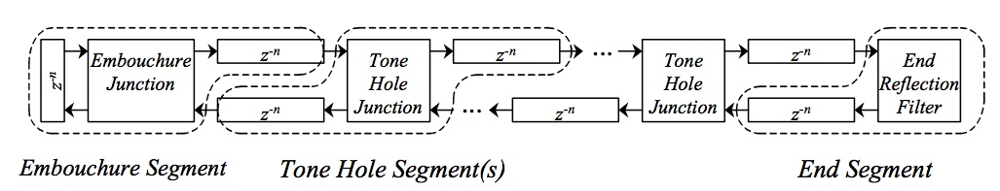
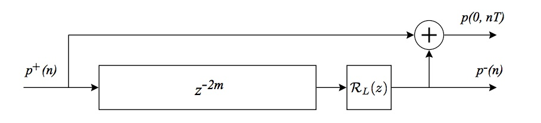

Modeling the penny-whistle in STK
 Jump to:
[ Introduction ]
[ Implementation ]
[ Challenges ]
[ Future work ]
[ Resources ]
[ Bibliography ]
Jump to:
[ Introduction ]
[ Implementation ]
[ Challenges ]
[ Future work ]
[ Resources ]
[ Bibliography ]
Introduction
This project involved implementing a waveguide model of the penny-whistle in STK, with a focus on the tone holes. The penny-whistle model contains six three-port dynamic tone holes and seven delaylines, and player control parameters that change the state (openness) of each individual hole, the placement of each hole on the instrument, and the speed of finger motion when changing hole state.
The tone holes are the main focus for two reasons. First, the relative placement of tone holes along an instrument body greatly influences the intonation of each note of the instrument. Unlike keyed flutes or other woodwinds with more tone holes and register vents than fingers, and therefore more open-shut hole configurations so more cross-fingering opportunities, the penny-whistle has just six holes, so the placement of each hole is especially critical to the intonation of each possible note. Second, much of the ornamentation and musical expressivity of the penny-whistle is based on finger ornamentation, which involves varying speeds of finger movement adjusting the openness of each hole to create interesting effects.
Try it for yourself: [ Code and usage ]Implementation
Model
As described by Scavone and Smith (1997), a tone hole on the body of a cylindrical instrument can be modeled as a distributed three-port junction, with both fixed and variable components (Figure 1).
A cylindrical tube with multiple tone holes can be modeled by connecting successive segments, as in Figure 2, where each tone hole junction is a three-port scattering junction.
|  |
This penny-whistle model is a modification of the pre-existing STK BlowHole class, which is a basic clarinet model with one tone hole and one register hole. The end reflection filter in Figure 2 is just a basic one-pole lowpass filter; the emboucher junction is a combination of breath pressure and a reedtable lookup function; while a more realistic edgetone-based sound production mechanism would be optimal, it was beyond the scope of this project.
By properties of linearity and time-invariance, the delayline pairs associated with each of the six tone hole junctions (as in Figure 2), were collapsed into single delaylines. This is best illustrated by comparing the dual-delayline implementation of plane-wave propagation in a cylindrical tube, as in Figure 3, with the single, simplified-delayline implementation of Figure 4. In these two figures, RL(z) represents a lumped reflectance filter. In this model it is replaced by the three-port scattering junction discussed above, which introduces additional feedback and feedforward terms into the delaylines but doesn't negate the effectiveness of the single delayline implementation.
|  |
Variables
Several factors affect the resonant frequencies and therefore intonation of the penny-whistle; in this model, adjustable parameters include tone hole spacing along the instrument body, size of each tone hole, and effective "height" of each tone hole (based in part on the tube thickness of the instrument body) (Hopkin 1992). Other adjustable parameters include the initial length of the cylindrical body (in terms of lowest frequency) and the bore radius of the body. The distance between each tone hole can be modified through the command-line, and two general body sizes (high whistle and low whistle) can be set by command-line; other parameters must be adjusted within the header and sources files, and are clearly marked.
In addition to the instrument construction variables, a function was added to set the openness of each tone hole individually, and a function to change the speed at which the hole state changes, which mimics the speed at which a finger opens or closes the holes. This means that when a hole state is changed, the change is governed by an openness 'envelope' rather than by a binary 'open' vs. 'closed' state, and so happens gradually, at whatever speed was set by the user. This allows a user to make stylistic choices about switching between two notes; fast finger speed for crisp note changes, and slower fingerspeeds to allow ornamentaiton such as slides.
While the current model contains 6 tone holes (and therefore 6 + 1 = 7 delaylines for the instrument body), a single variable in the main header file allows for any number of holes to be included (all 24-fingered aerophone players, rejoice!).
[ Top ]Challenges
The biggest technical challenge for this project was figuring out how to properly juggle multiple tone hole junctions (and their associated delaylines) in a clean, accurate, and easily extensible way. After a failed attempt to extend the single, simplified delayline implementation of the stk::BlowHole class, an attempt was made to start from scratch with the dual-delayline method --- one each for the positive and negative direction along the instrument. This failed for the same reason the earlier attempt did: the direct feed-forward components of the tone hole junctions had been missed, meaning that the input to each delayline was incomplete. Once this was pointed out (thanks, Prof. Scavone!), the simplified single-delayline method was fixed. This was chosen over the dual-delayline aproach for extensibility, because it enables the addition of extra holes without first reordering existing lines.
Another main challenge involved figuring out how best to program note changes. Many of the instruments in STK (including woodwind instruments Flute, Clarinet, and BlowHole) change notes by changing the effective length of the instrument, i.e. resetting the length of the delayline to correspond with the new frequency desired. In order to give the penny-whistle model the same hole-based inharmonicity of the real whistle, the whistle length needed to stay constant, with note changes altering the "openness" of the various holes rather than the instrument length. MIDI note numbers now correspond to each of the possible fingerings, so now affect the open/close state of each hole rather than delayline lenghts. This also mirrors how real whistles operate: because they are strongest in a single key and weak on accidentals, players that need to play in a new key simply switch whistles, rather than transposing their fingerings to play different notes on the same instrument, as musicians on orchestral-type instruments do. This means that MIDI or SKINI score files will sound in different keys if the instrument is modified, and a transposition of the score will need to take place in order to play the same score file in the same key on "different" whistles.
Intonation was another challenge; finding optimal hole placements is not a trivial exercise! Hopkin's guide to wind instrument design (1992) came in very handy for approximating hole placement; educated guesswork did the rest (as it does for many instrument-makers). Figure 5 shows the difference between actual tone hole spacing and effective-length spacing for real whistles. Because the sound production mechanism affects the sounding frequency of the penny-whistle --- blowing faster air causes the sound to jump up an octave --- the current preset whistle sizes "cheat" by setting the intial length of the whistle to twice its true length, so that the sounding notes are tuned to be the lower octave of the intended whistles. This means that the high whistle (preset "-w 0") is actually the higher octave of the low whistle, and the low whistle (preset "-w 1") is actually the higher octave of a whistle twice the size of an actual low whistle. Presumably, adjusting the breath input would alter this, but the breath control aspect and sound production mechanism was beyond the scope of this project.
Smaller challenges included allowing the hole position ratio to be modified from the command-line (in the play_whistle.cpp file); gradually incrementing the hole state from open to close or vice versa, rather than setting it at strictly 0 or 1, and allowing the player to choose the speed at which that happens; and determining respectably-in-tune hole placement settings for the two built-in whistles.
[ Top ]Future work
Future improvements to the model include:- Adding a more realistic edgetone air input mechanism. (Highest priority!)
- Playing around with the end filter. It is currently just a basic low-pass filter, but ideally it will be based on the bore of the instrument. (High priority!)
- Looking into and fine-tuning the playing variables, e.g. the breath speeds at different notes and articulations.
- Studying actual finger movements, and perhaps modeling fingering changes with an exponential rather than linear envelope.
- Adding 'automated' ornament commands, which mimic the hole state patterns of common ornaments (trills, turns, slides, etc) so that each note of each needn't be programmed individually in a score. This would be relatively easy to implement within the existing class structure.
- Creating more preset whistles of both common tunings (A, G, E)and non-traditional tunings.
- Making it easier to adjust whistle parameters other than just hole spacing from the command-line (in play_whistle.cpp).
- Making an abc->SKINI converter, so that folk music can be played more easily.
- Adding an articulation function that adjusts all note onsets.
- Making the command-line interface more user-friendly and rigorous (right now it is cobbled together).
Resources
- Synthesis ToolKit in C++ (STK): [ home ]
- Guido Gonzato guide to whistle-making: [ charts of hole distances ]
Bibliography
- Bartsch, M. A. 2000. Modeling the Tuning of the Transverse Flute Using Digital Waveguide Synthesis Techniques. Undergraduate honors thesis, University of Dayton. [ PDF ]
- Hopkin, B. 1992. Air columns and toneholes: Principles for wind instrument design. Experimental Musical Instruments.
- Scavone, G. P. and Smith, J. O. 1997. Digital waveguide modeling of woodwind tone holes. International Computer Music Conference. [ PDF ]
- Verge, M. P., A. Hirschberg, and R. Caussé. 1997. Sound production in recorderlike instruments. II. A simulation model. Journal of the Acoustical Society of America: 2925-39.
Jump to: [ Introduction ] [ Implementation ] [ Challenges ] [ Future work ] [ Resources ] [ Bibliography ]